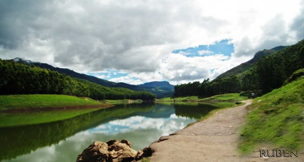

MUNNAR
Nestled in the Western Ghats mountain range of Kerala, Munnar is a picturesque hill station renowned for its lush tea plantations, verdant valleys, and mist-covered hills. Blessed with a pleasant climate throughout the year, Munnar offers breathtaking landscapes dotted with sprawling tea estates where visitors can indulge in tea-tasting sessions and scenic walks. The region is also home to several wildlife sanctuaries, including the Eravikulam National Park, where the endangered Nilgiri Tahr can be spotted. Adventure enthusiasts can explore trekking trails, go mountain biking, or embark on nature walks to discover the rich biodiversity and natural beauty of Munnar.
Places near by:
1.Echo Point, Munnar :
Located at an altitude of 600 ft. and at a distance of about 15 kilometres from Munnar, Echo Point is situated right in the lap of a quaint lake and misty hills covered with lush green trees. As the name suggests, this place is well known for its enthralling illustration of the phenomenon of echoing. As you scream, it is fun to hear your voice reverberate around the attraction
2Eravikulam National Park, Munnar Overview :
Located a 45 - minute drive away from Munnar, the Eravikulam National Park (also known as Rajamalai Wildlife Sanctuary), houses a rich and diverse variety of flora and fauna and is a UNESCO world heritage site. Elephant, Nilgiri langur, Nilgiri marten, Atlas moth (largest in the world), lion-tailed macaque, small-clawed otter, and a rare tiger or leopard are some of the main animal species that can be spotted here
3.Trekking in Munnar, Munnar Overview :

Perched atop the undulating peaks of the great range of Sahyadri, a World Heritage Site declared by UNESCO, Munnar is a mesmerising hill station in Kerala that offers a plethora of trekking trails for the trekkers to explore. The whole range is covered with carpets of greenery, low slopes covered with some of the world's highest tea plantations and rainforests rich in biodiversity, endemics and spice plantations and hills with their crests hidden behind a blanket of fog along with stretches of rugged terrains